Rodział 3 Eksploracyjna analiza danych
3.1 Eksploracyjna analiza danych | Cel
- Ogólna charakterystyka danych oraz badanego zjawiska
- Określenie przestrzennego/czasowego typu próbkowania
- Informacja o relacji pomiędzy lokalizacją obserwacji a czynnikami wpływającymi na zmienność przestrzenną cechy
3.2 Dane Wolin
3.2.1 Dane Wolin
library('sp')
library('rgdal')
wolin_lato_los <- read.csv('data/Wolin_TPZ_p_lato_750losN.csv', na.strings=-999.00)
coordinates(wolin_lato_los) <- ~X+Y
proj4string(wolin_lato_los) <- '+init=epsg:32633'
par(mar=c(rep(0, 4)))
plot(wolin_lato_los)
str(wolin_lato_los)## Formal class 'SpatialPointsDataFrame' [package "sp"] with 5 slots
## ..@ data :'data.frame': 750 obs. of 9 variables:
## .. ..$ X1999.09.13_TPZ : num [1:750] 20.5 24.8 26.9 21 23 ...
## .. ..$ X1999.09.13_NDVI: num [1:750] 0.47 0.328 0.279 0.492 0.433 ...
## .. ..$ X2002.08.20_TPZ : num [1:750] 20 28.5 29.3 22.4 23.7 ...
## .. ..$ X2002.08.20_NDVI: num [1:750] 0.492 0.12 0.224 0.441 0.405 ...
## .. ..$ CLC06 : int [1:750] 411 312 112 231 242 211 411 211 231 211 ...
## .. ..$ CLC06_p_lato : int [1:750] 5 4 2 3 2 3 5 3 3 3 ...
## .. ..$ odl_od_morza : num [1:750] 14982 14946 14091 12572 12646 ...
## .. ..$ InsCalk_1999.09 : num [1:750] 48.9 47.6 48.5 48.3 48.6 ...
## .. ..$ InsCalk_2002.08 : num [1:750] 64.6 63.5 64.3 64.2 64.4 ...
## ..@ coords.nrs : int [1:2] 1 2
## ..@ coords : num [1:750, 1:2] 472920 473970 474210 472140 472500 ...
## .. ..- attr(*, "dimnames")=List of 2
## .. .. ..$ : chr [1:750] "1" "2" "3" "4" ...
## .. .. ..$ : chr [1:2] "X" "Y"
## ..@ bbox : num [1:2, 1:2] 451470 5962620 483570 5985510
## .. ..- attr(*, "dimnames")=List of 2
## .. .. ..$ : chr [1:2] "X" "Y"
## .. .. ..$ : chr [1:2] "min" "max"
## ..@ proj4string:Formal class 'CRS' [package "sp"] with 1 slot
## .. .. ..@ projargs: chr "+init=epsg:32633 +proj=utm +zone=33 +datum=WGS84 +units=m +no_defs +ellps=WGS84 +towgs84=0,0,0"str(wolin_lato_los@data)## 'data.frame': 750 obs. of 9 variables:
## $ X1999.09.13_TPZ : num 20.5 24.8 26.9 21 23 ...
## $ X1999.09.13_NDVI: num 0.47 0.328 0.279 0.492 0.433 ...
## $ X2002.08.20_TPZ : num 20 28.5 29.3 22.4 23.7 ...
## $ X2002.08.20_NDVI: num 0.492 0.12 0.224 0.441 0.405 ...
## $ CLC06 : int 411 312 112 231 242 211 411 211 231 211 ...
## $ CLC06_p_lato : int 5 4 2 3 2 3 5 3 3 3 ...
## $ odl_od_morza : num 14982 14946 14091 12572 12646 ...
## $ InsCalk_1999.09 : num 48.9 47.6 48.5 48.3 48.6 ...
## $ InsCalk_2002.08 : num 64.6 63.5 64.3 64.2 64.4 ...poligon <- readOGR('data', 'wolin_polygon')## OGR data source with driver: ESRI Shapefile
## Source: "data", layer: "wolin_polygon"
## with 1 features
## It has 11 fieldsplot(poligon, add=TRUE)
3.3 Statystyki opisowe
3.3.1 Statystyki opisowe
summary(wolin_lato_los@data)## X1999.09.13_TPZ X1999.09.13_NDVI X2002.08.20_TPZ X2002.08.20_NDVI
## Min. :16.01 Min. :-0.2273 Min. :17.11 Min. :-0.2500
## 1st Qu.:20.24 1st Qu.: 0.3207 1st Qu.:20.48 1st Qu.: 0.2673
## Median :21.46 Median : 0.4101 Median :21.89 Median : 0.3766
## Mean :22.86 Mean : 0.3627 Mean :23.56 Mean : 0.3295
## 3rd Qu.:24.92 3rd Qu.: 0.4752 3rd Qu.:25.81 3rd Qu.: 0.4483
## Max. :33.19 Max. : 0.5912 Max. :41.79 Max. : 0.5724
## NA's :495 NA's :495
## CLC06 CLC06_p_lato odl_od_morza InsCalk_1999.09
## Min. :112 Min. :1.000 Min. : 0 Min. :31.89
## 1st Qu.:231 1st Qu.:3.000 1st Qu.: 1928 1st Qu.:47.89
## Median :311 Median :4.000 Median : 4259 Median :48.25
## Mean :282 Mean :3.603 Mean : 4940 Mean :48.03
## 3rd Qu.:312 3rd Qu.:4.000 3rd Qu.: 7127 3rd Qu.:48.45
## Max. :512 Max. :6.000 Max. :16276 Max. :54.55
##
## InsCalk_2002.08
## Min. :47.02
## 1st Qu.:63.78
## Median :64.09
## Mean :63.87
## 3rd Qu.:64.26
## Max. :69.44
## 3.3.2 Statystyki opisowe | średnia i mediana
median(wolin_lato_los$X1999.09.13_TPZ, na.rm=TRUE)## [1] 21.45667mean(wolin_lato_los$X1999.09.13_TPZ, na.rm=TRUE)## [1] 22.860023.3.3 Statystyki opisowe | średnia i mediana
- w wypadku symetrycznego rozkładu te dwie cechy są równe
- średnia jest bardziej wrażliwa na wartości odstające
- mediana jest lepszą miarą środka danych, jeżeli są one skośne
Po co używać średniej?
- przydatniejsza w przypadku małych zbiorów danych
- gdy rozkład danych jest symetryczny
- (jednak) często warto podawać obie miary
3.3.4 Statystyki opisowe | minimum i maksimum
min(wolin_lato_los$X1999.09.13_TPZ, na.rm=TRUE)## [1] 16.00699max(wolin_lato_los$X1999.09.13_TPZ, na.rm=TRUE)## [1] 33.189763.3.5 Statystyki opisowe | ochylenie standardowe

sd(wolin_lato_los$X1999.09.13_TPZ, na.rm=TRUE)## [1] 3.6615023.4 Wykresy
3.4.1 Histogram
library('ggplot2')
ggplot(wolin_lato_los@data, aes(X1999.09.13_TPZ)) + geom_histogram()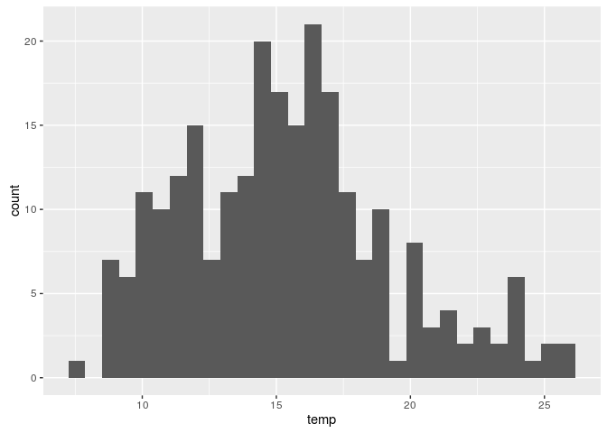
- Stworzony przez Karla Pearsona
- Jest graficzną reprezentacją rozkładu
danych - Wartości danych są łączone w przedziały (na osi poziomej) a na osi pionowej jest ukazana liczba punktów (obserwacji) w każdym przedziale
- Różny dobór przedziałów może dawać inną informację
- W pakiecie ggplot2, domyślnie przedział to zakres/30
3.4.2 Estymator jądrowy gęstości (ang. kernel density estimation)
ggplot(wolin_lato_los@data, aes(X1999.09.13_TPZ)) + geom_density()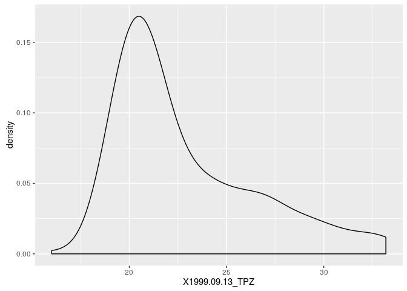
3.4.3 Wykresy kwantyl-kwantyl (ang.quantile-quantile)
ggplot(wolin_lato_los@data, aes(sample=X1999.09.13_TPZ)) + stat_qq()
3.4.4 Wykresy kwantyl-kwantyl (ang. quantile-quantile)
http://stats.stackexchange.com/questions/101274/how-to-interpret-a-qq-plot 
ggplot(wolin_lato_los@data) + geom_point(aes(x=X1999.09.13_TPZ, y=X1999.09.13_NDVI)) + xlab('TPZ') + ylab('NDVI')
–>
3.4.5 Dystrybuanta (CDF)
- Dystrybuanta (ang. conditional density function - CDF) wyświetla prawdopodobieństwo, że wartość zmiennej przewidywanej jest mniejsza lub równa określonej wartości
ggplot(wolin_lato_los@data, aes(X1999.09.13_TPZ)) + stat_ecdf()
3.5 Porównanie zmiennych
3.5.1 Kowariancja
- Kowariancja jest nieunormowaną miarą zależności liniowej pomiędzy dwiema zmiennymi
- Kowariancja dwóch zmiennych \(x\) i \(y\) pokazuje jak dwie zmienne są ze sobą liniowo powiązane
- Dodatnia kowariancja wzkazuje na pozytywną relację liniową pomiędzy zmiennymi, podczas gdy ujemna kowariancja świadczy o odwrotnej sytuacji
- Jeżeli zmienne nie są ze sobą liniowo powiązane, wartość kowariacji jest bliska zeru
- Inaczej mówiąc, kowariancja stanowi miarę wspólnej zmienności dwóch zmiennych
- Wielkość samej kowariancji uzależniona jest od przyjętej skali zmiennej (jednostki)
- Inne wyniku uzyskamy (przy tej samej zależności pomiędzy parą zmiennych), gdy będziemy analizować wyniki np. wieku i dochodu w złotówkach a inne dla wieku i dochodu w dolarach
cov(wolin_lato_los$X1999.09.13_TPZ, wolin_lato_los$X1999.09.13_NDVI, use= "complete.obs")## [1] -0.44547033.5.2 Współczynnik korelacji
- Wspołczynnik korelacji to unormowana miara zależności pomiędzy dwiema zmiennymi, przyjmująca wartości od -1 do 1
- Współczynnik korelacji jest uzyskiwany poprzez podzielenie wartości kowariancji przez odchylenie standardowe wyników
- Z racji unormowania nie jest ona uzależniona od jednostki
ggplot(wolin_lato_los@data, aes(X1999.09.13_TPZ, X1999.09.13_NDVI)) + geom_point()
cor(wolin_lato_los$X1999.09.13_TPZ, wolin_lato_los$X1999.09.13_NDVI, use= "complete.obs")## [1] -0.70363983.5.3 Współczynnik korelacji
cor.test(wolin_lato_los$X1999.09.13_TPZ, wolin_lato_los$X1999.09.13_NDVI)##
## Pearson's product-moment correlation
##
## data: wolin_lato_los$X1999.09.13_TPZ and wolin_lato_los$X1999.09.13_NDVI
## t = -15.751, df = 253, p-value < 2.2e-16
## alternative hypothesis: true correlation is not equal to 0
## 95 percent confidence interval:
## -0.7607274 -0.6357494
## sample estimates:
## cor
## -0.70363983.5.4 Współczynnik korelacji
cor(wolin_lato_los@data[c(1:4, 7:9)], use= "complete.obs")## X1999.09.13_TPZ X1999.09.13_NDVI X2002.08.20_TPZ
## X1999.09.13_TPZ 1.0000000 -0.70363978 0.9041594
## X1999.09.13_NDVI -0.7036398 1.00000000 -0.6389463
## X2002.08.20_TPZ 0.9041594 -0.63894626 1.0000000
## X2002.08.20_NDVI -0.6348066 0.89587063 -0.6752586
## odl_od_morza 0.3924286 -0.15757467 0.3481699
## InsCalk_1999.09 0.1431125 0.03585373 0.1180259
## InsCalk_2002.08 0.1549011 0.03858753 0.1300928
## X2002.08.20_NDVI odl_od_morza InsCalk_1999.09
## X1999.09.13_TPZ -0.63480660 0.3924286 0.14311253
## X1999.09.13_NDVI 0.89587063 -0.1575747 0.03585373
## X2002.08.20_TPZ -0.67525858 0.3481699 0.11802594
## X2002.08.20_NDVI 1.00000000 -0.1381452 0.04653160
## odl_od_morza -0.13814523 1.0000000 0.13097399
## InsCalk_1999.09 0.04653160 0.1309740 1.00000000
## InsCalk_2002.08 0.04930027 0.1331220 0.99738708
## InsCalk_2002.08
## X1999.09.13_TPZ 0.15490106
## X1999.09.13_NDVI 0.03858753
## X2002.08.20_TPZ 0.13009279
## X2002.08.20_NDVI 0.04930027
## odl_od_morza 0.13312196
## InsCalk_1999.09 0.99738708
## InsCalk_2002.08 1.000000003.5.5 Współczynnik korelacji
library('corrplot')
corrplot(cor(wolin_lato_los@data[c(1:4, 7:9)], use= "complete.obs"))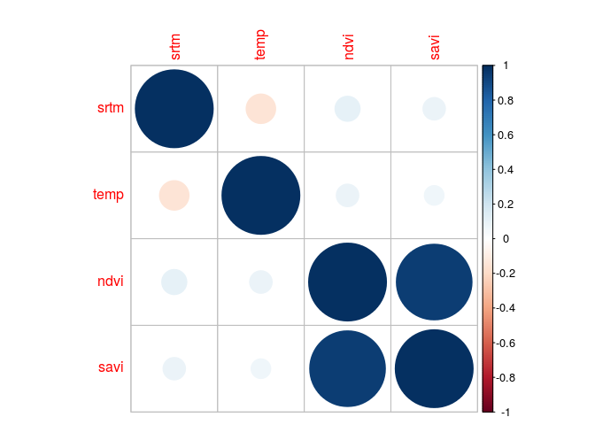
3.5.6 Wykresy pudełkowe
wolin_lato_los$CLC06_p_lato <- as.factor(wolin_lato_los$CLC06_p_lato)
ggplot(wolin_lato_los@data, aes(CLC06_p_lato, X1999.09.13_TPZ)) + geom_boxplot()
- obrazuje pięc podstawowych
statystyk opisowych oraz wartości odstające - pudełko to zakres międzykwantylowy
- linie oznaczają najbardziej ekstremalne wartości, ale nie odstające. Górna to 1,5*IQR ponad krawędź pudełka, dolna to 1,5*IQR poniżej wartości dolnej krawędzi pudełka
- linia środkowa to mediana
3.5.7 Wykresy pudełkowe
ggplot(wolin_lato_los@data, aes(CLC06_p_lato, X1999.09.13_TPZ)) + geom_boxplot()
- Tereny komunikacyjne i porty
- Zabudowa luźna, złożone systemy upraw i działek
- Grunty orne, Łąki
- Lasy liściaste, Lasy iglaste, mieszane
- Bagna, Torfowiska
- Zbiorniki wodne
3.5.8 Testowanie istotności różnić średniej pomiędzy grupami
wolin_lato_los$CLC06_p_lato <- as.factor(wolin_lato_los$CLC06_p_lato)
aov_test <- aov(X1999.09.13_TPZ~CLC06_p_lato, data=wolin_lato_los)
summary(aov_test)## Df Sum Sq Mean Sq F value Pr(>F)
## CLC06_p_lato 5 1665 333.1 47.66 <2e-16 ***
## Residuals 249 1740 7.0
## ---
## Signif. codes: 0 '***' 0.001 '**' 0.01 '*' 0.05 '.' 0.1 ' ' 1
## 495 observations deleted due to missingness3.5.9 Testowanie istotności różnić średniej pomiędzy grupami
tukey <- TukeyHSD(aov_test, "CLC06_p_lato")
plot(tukey, las=1)
3.6 Transformacje danych
3.6.1 Transformacje danych
- Transformacja danych może mieć na celu ułatwienie porównywania różnych zmiennych, zniwelowanie skośności rozkładu lub też zmniejszenie wpływu danych odstających
- Centrowanie i skalowanie (standaryzacja):
- Centrowanie danych - wybierana jest przeciętna wartość predyktora, a następnie od wszystkich wartości predyktorów odejmowana jest wybrana wcześniej wartość
- Skalowanie danych - dzielenie każdej wartości predyktora przez jego odchylenie standardowe
- Wadą tego podjeścia jest główne zmniejszenie interpretowalności pojedynczych wartości
- Redukcja skośności:
- Logarytmizacja
- Pierwiastkowanie
- Rodzina transformacji Boxa Coxa
- Inne
3.6.2 Transformacja danych | Logarytmizacja
ggplot(wolin_lato_los@data, aes(X2002.08.20_TPZ)) + geom_density()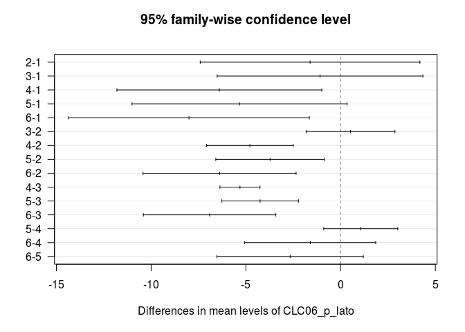
wolin_lato_los$log_tpz <- log(wolin_lato_los$X2002.08.20_TPZ)
ggplot(wolin_lato_los@data, aes(log_tpz)) + geom_density()
wolin_lato_los$exp_tpz <- exp(wolin_lato_los$log_tpz)
ggplot(wolin_lato_los@data, aes(exp_tpz)) + geom_density()
3.6.3 Transformacja danych | Pierwiastkowanie
ggplot(wolin_lato_los@data, aes(X2002.08.20_TPZ)) + geom_density()
wolin_lato_los$sqrt_tpz <- sqrt(wolin_lato_los$X2002.08.20_TPZ)
ggplot(wolin_lato_los@data, aes(sqrt_tpz)) + geom_density()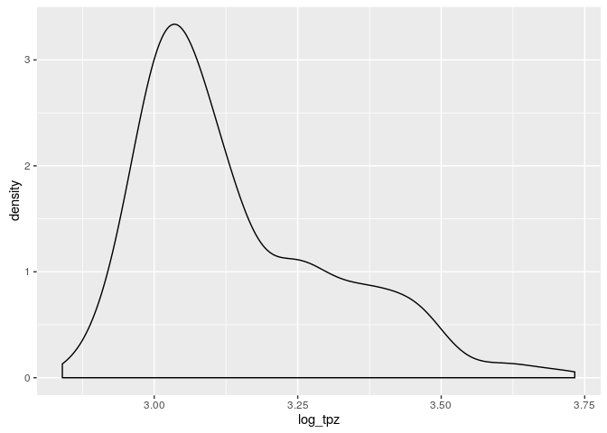
wolin_lato_los$pow_tpz <- wolin_lato_los$sqrt_tpz^2
ggplot(wolin_lato_los@data, aes(pow_tpz)) + geom_density()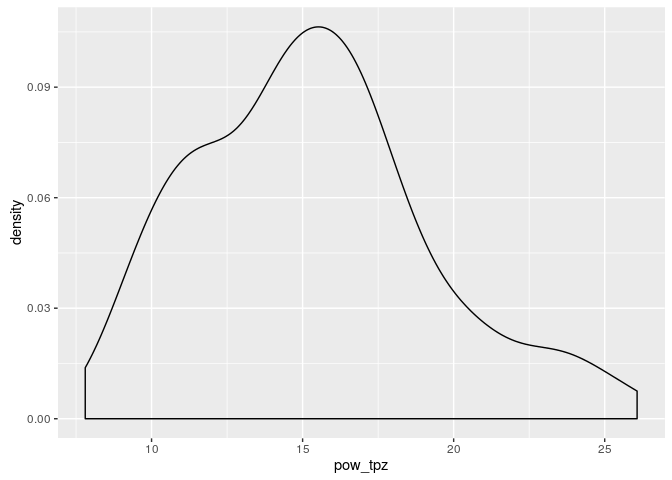
3.6.4 Transformacja danych | Rodzina transformacji Boxa Coxa
library('caret')
ggplot(wolin_lato_los@data, aes(X2002.08.20_TPZ)) + geom_density()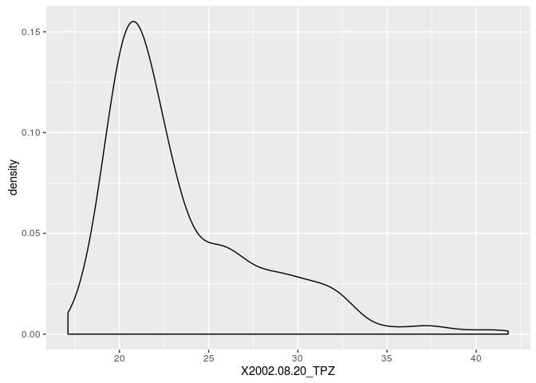
transformacja <- BoxCoxTrans(wolin_lato_los$X2002.08.20_TPZ)
transformacja## Box-Cox Transformation
##
## 750 data points used to estimate Lambda
##
## Input data summary:
## Min. 1st Qu. Median Mean 3rd Qu. Max.
## 17.11 20.48 21.89 23.56 25.81 41.79
##
## Largest/Smallest: 2.44
## Sample Skewness: 1.34
##
## Estimated Lambda: -2wolin_lato_los$bc_tpz <- predict(transformacja, wolin_lato_los$X2002.08.20_TPZ)
ggplot(wolin_lato_los@data, aes(bc_tpz)) + geom_density()
invBoxCox <- function(x, lambda) if (lambda == 0) exp(x) else (lambda*x + 1)^(1/lambda)
wolin_lato_los$bc_tpz_inv <- invBoxCox(wolin_lato_los$bc_tpz, lambda=-2)
ggplot(wolin_lato_los@data, aes(bc_tpz_inv)) + geom_density()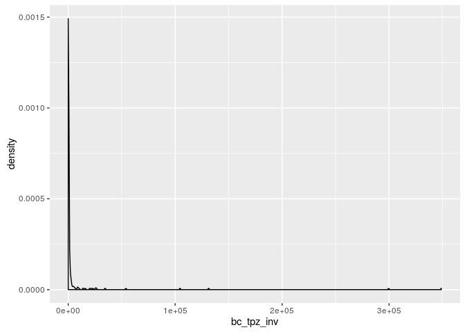
3.7 Mapy
3.7.1 Podstawowe terminy | Kontekst przestrzenny
- Populacja - cały obszar, dla którego chcemy określić wybrane właściwości
- Próba - zbiór obserwacji, dla których mamy informacje. Inaczej, próba to podzbiór populacji. Zazwyczaj niemożliwe (lub bardzo kosztowne) jest zdobycie informacji o całej populacji. Z tego powodu bardzo cenne jest odpowiednie wykorzystanie informacji z próby.
3.7.2 Mapy punktowe | Cel
- Sprawdzenie poprawności współrzędnych
- Wgląd w typ próbkowania
- Sprawdzenie poprawności danych - dane odstające lokalnie
- Identyfikacja głównych cech struktury przestrzennej zjawiska (np. trend)
3.7.3 Typ próbowania
- Regularny
- Losowy
- Losowy stratyfikowany
- Preferencyjny
- Liniowy
3.7.4 Typ próbowania | Regularny
set.seed(225)
regularny <- spsample(poligon, 150, type = 'regular')
plot(regularny)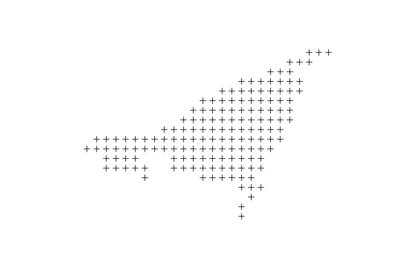
- Zmienna offset
3.7.5 Typ próbowania | Losowy
set.seed(301)
losowy <- spsample(poligon, 150, type = 'random')
plot(losowy)
- Każda lokalizacja ma takie samo prawdopodobieństwo wystąpienia
- Każdy punkt jest losowany niezależnie od pozostałych
3.7.6 Typ próbowania | Losowy stratyfikowany
set.seed(125)
strat <- spsample(poligon, 150, type = 'stratified')
plot(strat)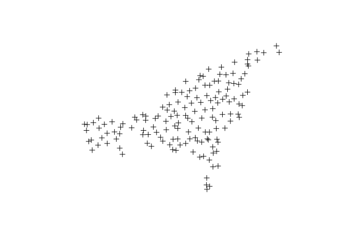
3.7.7 Typ próbowania | Preferencyjny I
set.seed(425)
pref <- spsample(poligon, 150, type = 'clustered', nclusters=80)
plot(pref)
3.7.8 Typ próbowania | Liniowy
library('rgdal')
linia <- readOGR("data", "linia", verbose=FALSE)
set.seed(224)
izoliniowy <- spsample(linia, 150, type = 'regular')
plot(izoliniowy)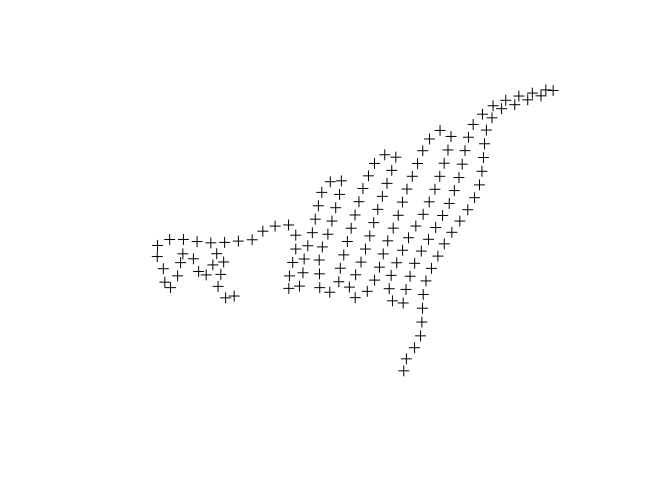
3.7.9 Mapy punktowe i dane lokalnie odstające
par(mar=c(rep(0, 4)))
library('rgdal')
poligon <- readOGR(dsn='data', layer='wolin_polygon', verbose=FALSE)
plot(poligon)
plot(wolin_lato_los, add=TRUE) 
3.7.10 Mapy punktowe i dane lokalnie odstające
library('sp')
# select.spatial(wolin_lato_los, digitize=FALSE, rownames=TRUE)
spplot(wolin_lato_los, "X2002.08.20_TPZ", identify=TRUE)3.7.11 Mapy punktowe i dane lokalnie odstające
spplot(wolin_lato_los, "X2002.08.20_TPZ", sp.layout = poligon)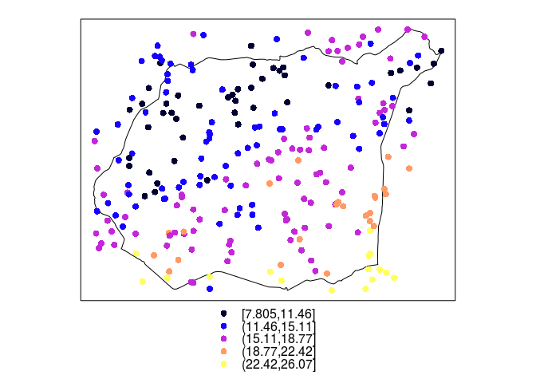
3.8 Rozgrupowanie danych
3.8.1 Rozgrupowanie danych
- Istnieje szereg metod rozgrupowywania danych, między innymi:
- Rozgrupowywanie komórkowe
- Rozgrupowywanie poligonowe
- Celem tych metod jest nadanie wag obserwacjom w celu zapewnienia reprezentatywności przestrzennej danych
3.8.2 Rozgrupowanie danych
library('sp')
wolin_lato_pref <- read.csv('data/Wolin_TPZ_p_lato_754prefN.csv', na.strings=-999.00)
coordinates(wolin_lato_pref) <- ~X+Y
proj4string(wolin_lato_pref) <- '+init=epsg:32633'
spplot(wolin_lato_pref, "X2002.08.20_TPZ")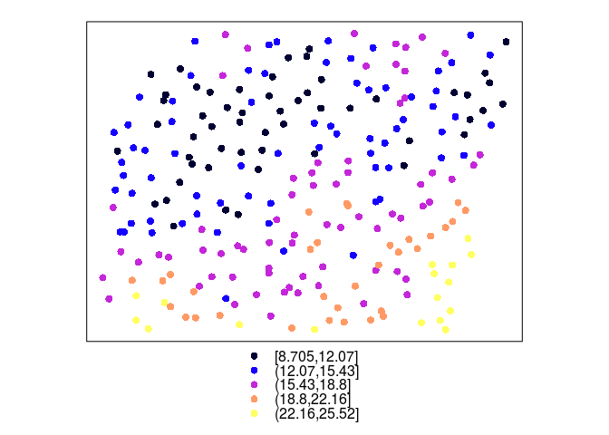
summary(wolin_lato_pref$X2002.08.20_TPZ)## Min. 1st Qu. Median Mean 3rd Qu. Max.
## 18.14 21.96 26.16 26.54 30.07 44.223.8.3 Rozgrupowanie komórkowe I | (ang. cell declustering)
\[w'_j=\frac{\frac{1}{n_i}}{\text{liczba komórek z danymi}} \cdot n\] , gdzie \(n_i\) to liczba obserwacji w komórce, a \(n\) to łączna liczba obserwacji
3.8.4 Rozgrupowanie komórkowe I | (ang. cell declustering)
wolin_lato_pref <- read.csv("data/Wolin_TPZ_p_lato_754prefN.csv", na.strings = -999)
wolin_lato_pref$id <- 1:nrow(wolin_lato_pref)
coordinates(wolin_lato_pref) <- ~X + Y
proj4string(wolin_lato_pref) <- "+init=epsg:32633"
spplot(wolin_lato_pref, "id", colorkey=TRUE)
library('rgdal')
library("raster")
library('rgeos')
poligon_shp <- readOGR(dsn = "data", layer = "wolin_polygon", verbose = FALSE)
siatka_n <- raster(extent(poligon_shp))
# siatka_n <- raster(xmn=450000, xmx=485000, ymn=5960000, ymx=5989000)
res(siatka_n) <- c(1000, 1000)
siatka_n[] <- 0
proj4string(siatka_n) <- CRS(proj4string(wolin_lato_pref))
siatka_n <- mask(siatka_n, gBuffer(poligon_shp, width = 500))
siatka_n <- as(siatka_n, "SpatialPolygonsDataFrame")
siatka_n <- siatka_n[!is.na(siatka_n@data$layer), ]
plot(siatka_n)
plot(wolin_lato_pref, add=TRUE)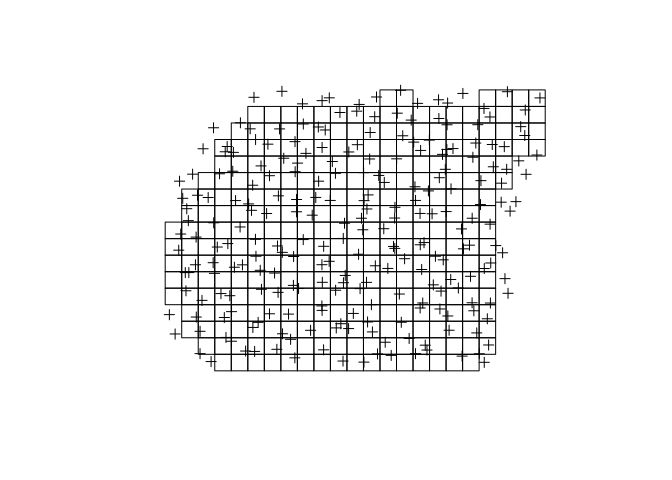
wolin_lato_pref$liczebnosc <- rep(0, length(wolin_lato_pref))
siatka_nr <- aggregate(wolin_lato_pref['liczebnosc'], by = siatka_n, FUN = length)
spplot(siatka_nr, "liczebnosc")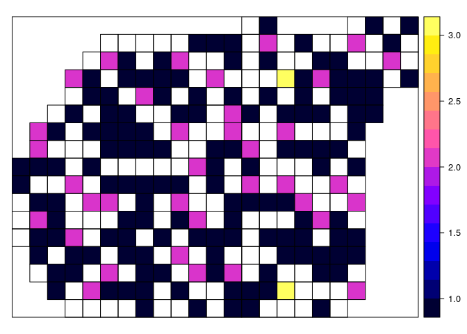
liczba <- over(wolin_lato_pref, siatka_nr)
wolin_lato_pref$waga <- ((1/liczba$liczebnosc)/sum(!is.na(siatka_nr$liczebnosc))) * length(wolin_lato_pref)
spplot(wolin_lato_pref, 'waga')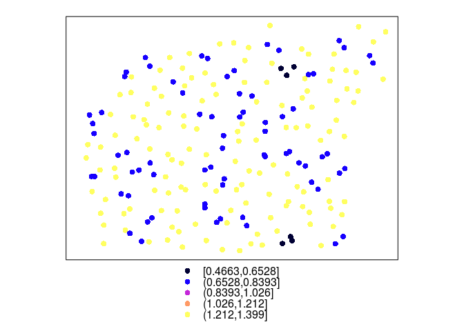
srednia_arytmetyczna <- mean(wolin_lato_pref$X2002.08.20_TPZ)
srednia_wazona_c1 <- mean(wolin_lato_pref$X2002.08.20_TPZ * wolin_lato_pref$waga, na.rm=TRUE)3.8.5 Rozgrupowanie komórkowe II | (ang. cell declustering)
library('gstat')
wolin_lato_pref <- read.csv('data/Wolin_TPZ_p_lato_754prefN.csv', na.strings=-999.00)
wolin_lato_pref$id <- 1:nrow(wolin_lato_pref)
coordinates(wolin_lato_pref) <- ~X+Y
proj4string(wolin_lato_pref) <- '+init=epsg:32633'
spplot(wolin_lato_pref, "id")
library('raster')
poligon_shp <- readOGR(dsn='data', layer='wolin_polygon', verbose=FALSE)
siatka_n <- raster(extent(poligon_shp))
res(siatka_n) <- c(100, 100)
siatka_n[] <- 0
proj4string(siatka_n) <- CRS(proj4string(wolin_lato_pref))
siatka_n <- mask(siatka_n, poligon_shp)
siatka_n <- as(siatka_n, 'SpatialPointsDataFrame')
siatka_n <- siatka_n[!is.na(siatka_n@data$layer), ]
gridded(siatka_n) <- TRUE
plot(siatka_n)
3.8.6 Rozgrupowanie komórkowe II | (ang. cell declustering)
out <- krige(id~1, wolin_lato_pref, siatka_n, nmax=1)## [inverse distance weighted interpolation]spplot(out, "var1.pred")
df <- as.data.frame(table(out[[1]]))
df$waga <- df$Freq/sum(df$Freq)
wolin_lato_pref <- merge(wolin_lato_pref, df, by.x="id", by.y="Var1")
summary(wolin_lato_pref$waga)## Min. 1st Qu. Median Mean 3rd Qu. Max.
## 3.822e-05 4.682e-04 8.791e-04 1.326e-03 1.682e-03 8.829e-03spplot(out, "var1.pred", sp.layout=list("sp.points", wolin_lato_pref))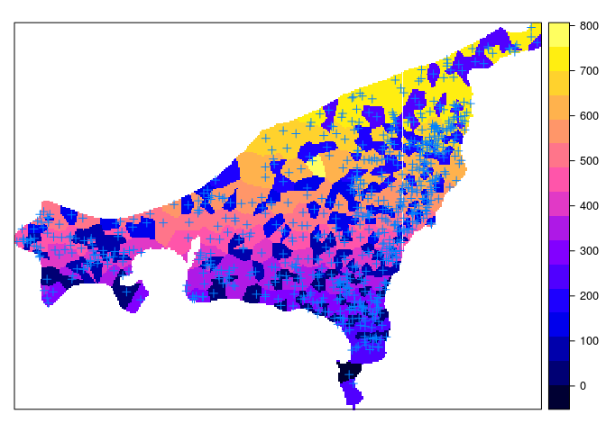
spplot(wolin_lato_pref["waga"])
srednia_arytmetyczna <- mean(wolin_lato_pref$X2002.08.20_TPZ)
srednia_wazona_c2 <- sum(wolin_lato_pref$X2002.08.20_TPZ * wolin_lato_pref$waga, na.rm=TRUE)3.8.7 Rozgrupowanie poligonowe | (ang. polygon declustering)
\[w'_j=\frac{area_j}{\sum_{j=1}^{n}area_j} \cdot n\] , gdzie \(area_j\) powierzchnia dla wybranej obserwacji, a \(n\) to łączna liczba obserwacji
3.8.8 Rozgrupowanie poligonowe | (ang. polygon declustering)
wolin_lato_pref <- read.csv('data/Wolin_TPZ_p_lato_754prefN.csv', na.strings=-999.00)
wolin_lato_pref$id <- 1:nrow(wolin_lato_pref)
coordinates(wolin_lato_pref) <- ~X+Y
proj4string(wolin_lato_pref) <- '+init=epsg:32633'
spplot(wolin_lato_pref, "id")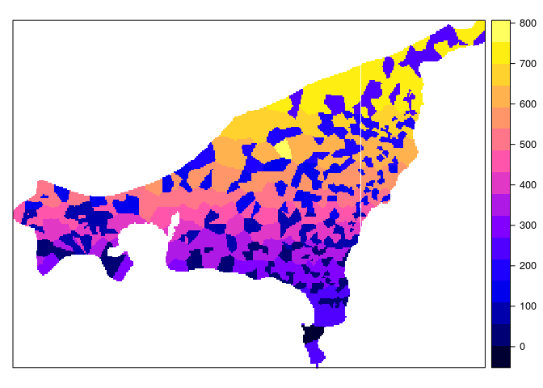
library('dismo')
v <- voronoi(wolin_lato_pref)
plot(wolin_lato_pref, cex=0.2, col='red')
plot(v, add=TRUE)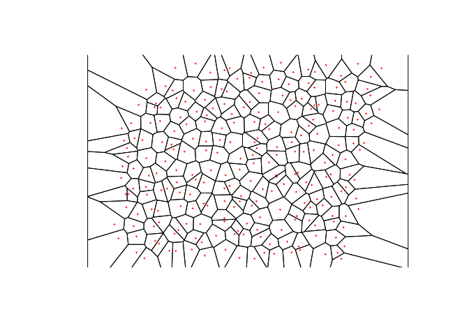
library('rgeos')
v_intersect <-intersect(poligon_shp, v)
plot(wolin_lato_pref, cex=0.2, col='red')
plot(v_intersect, add=TRUE)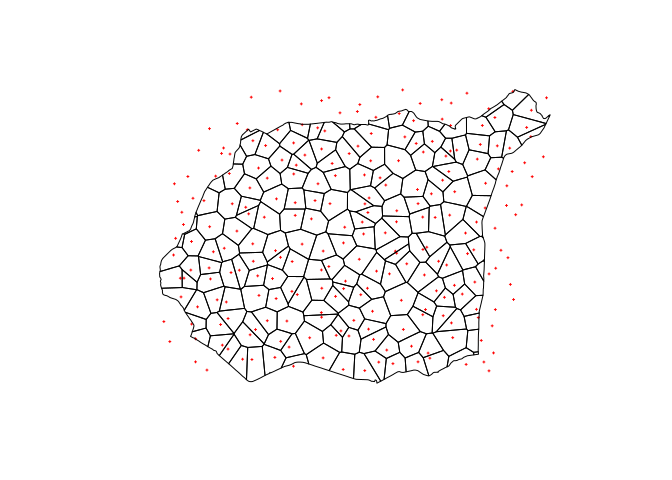
v_intersect$pow <- area(v_intersect)
v_intersect$waga <- v_intersect$pow/sum(v_intersect$pow) * length(wolin_lato_pref)
wolin_lato_pref <- merge(wolin_lato_pref, v_intersect[c('id', 'waga')], by='id')
spplot(wolin_lato_pref, 'waga')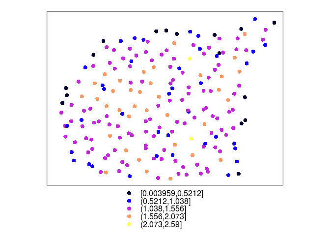
srednia_arytmetyczna <- mean(wolin_lato_pref$X2002.08.20_TPZ)
srednia_wazona_p <- mean(wolin_lato_pref$X2002.08.20_TPZ*wolin_lato_pref$waga)| Średnia arytmetyczna | |
|---|---|
| Populacja | 23.46969 |
| Próba | 26.54119 |
| Rozgrupowanie komórkowe I | 24.55135 |
| Rozgrupowanie komórkowe II | 24.08124 |
| Rozgrupowanie poligonowe | 24.07996 |